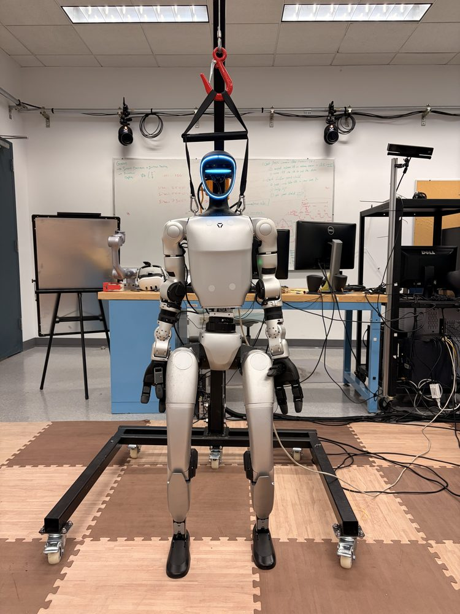
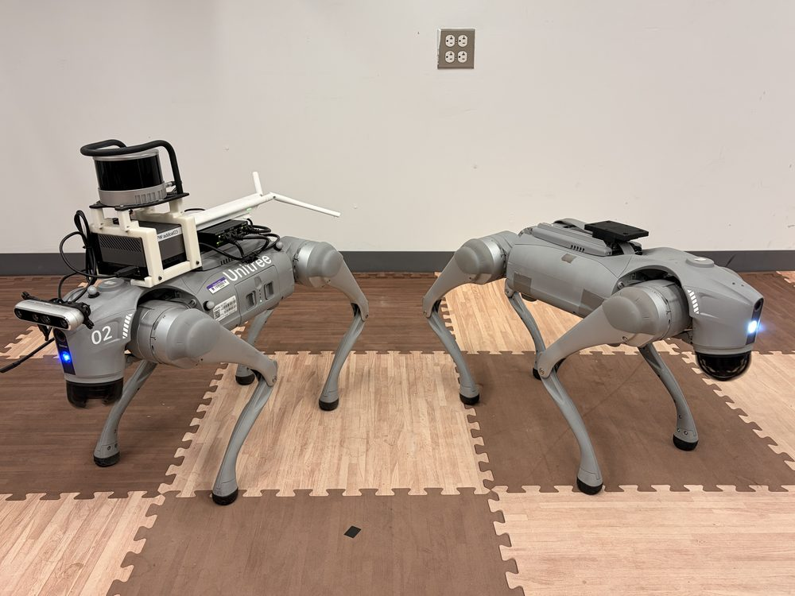
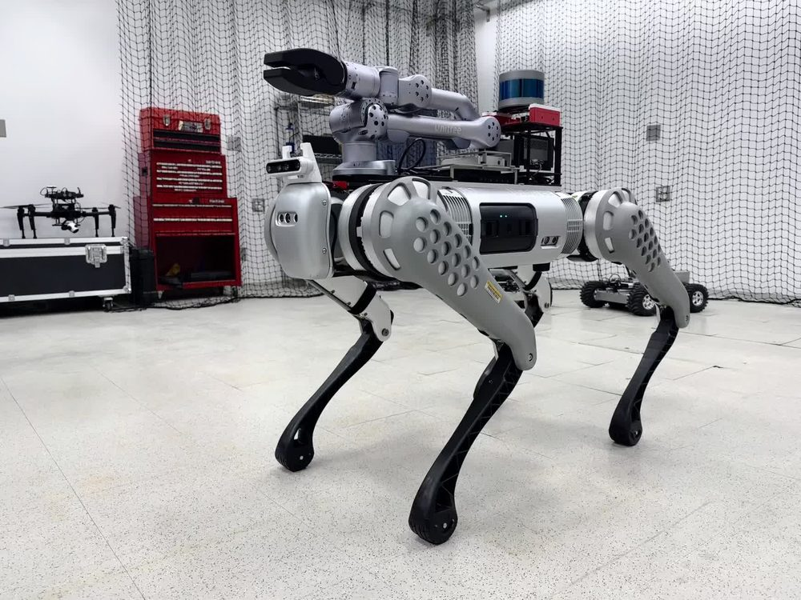
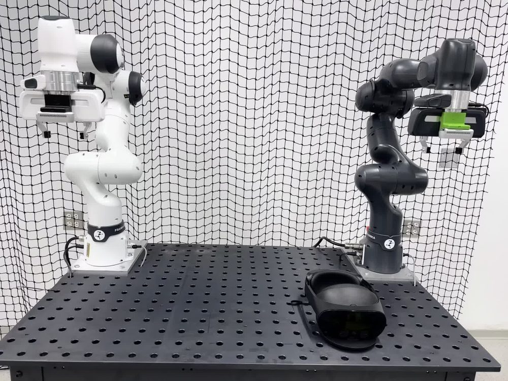
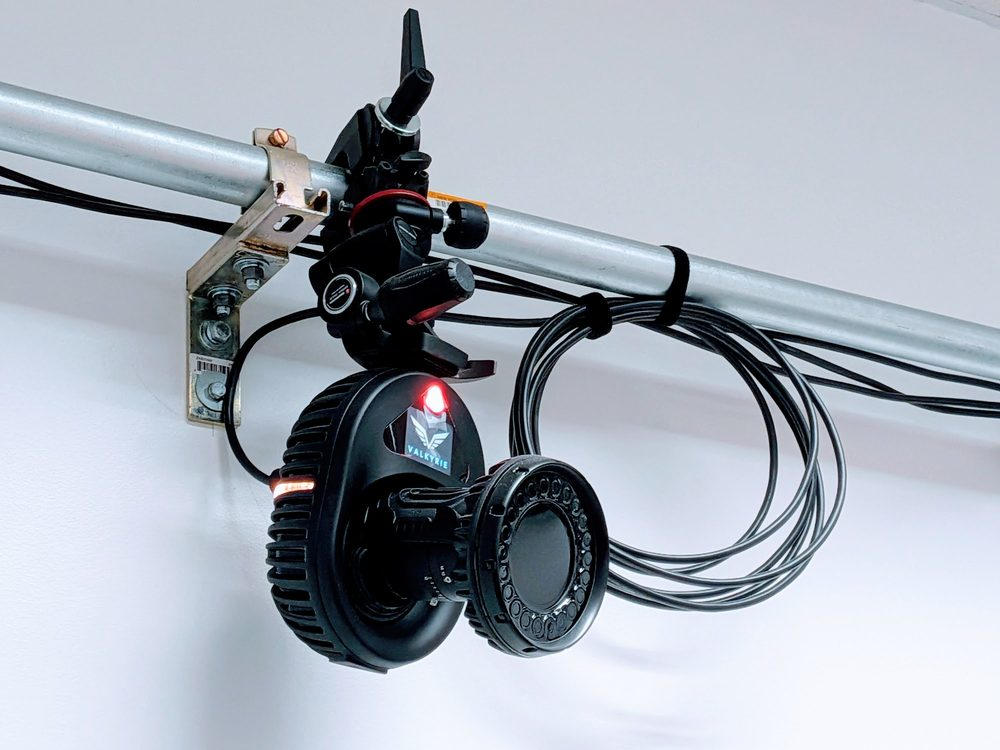
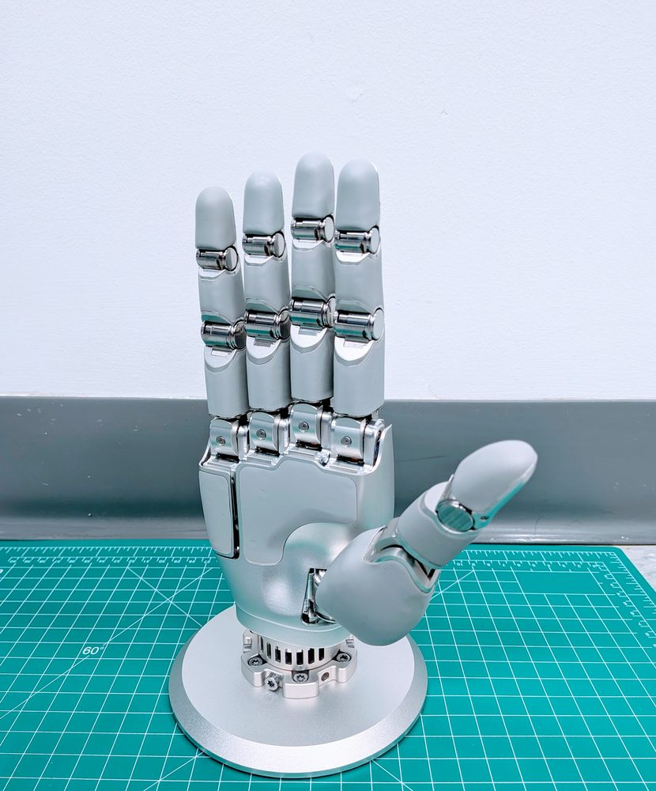
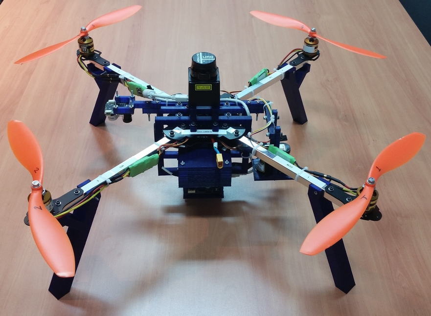
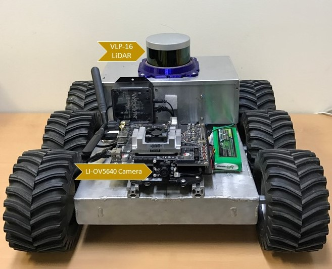

Lab Platforms
Our lab is equipped with a diverse set of robotic platforms and state-of-the-art infrastructure. This hardware enables a broad range of research in legged locomotion, manipulation, navigation, and multi-agent systems. Below are some of our key platforms.

Unitree G1 Humanoid
Humanoid platform with three-fingered hand for locomotion and manipulation.

Unitree Go2 Quadruped x2
Two medium-scale quadrupeds for navigation, locomotion, and multi-robot experiments.

Unitree B1 Quadruped
Heavy-duty quadruped with Unitree Z1 arm for locomotion and manipulation in harsh environments.

Franka Emika Panda Arm x3
Three torque-controlled 7-DoF arms for robotic manipulation.

Vicon Motion Capture System
Vicon Valkyrie 10-camera motion capture system for accurate 3D pose estimation and tracking.

Sharpa Wave
22-DoF robotic hand with tactile sensing for dexterous manipulation.

Aerial Vehicles
For sensor fusion, embedded autopilot systems, real-time control, state estimation, and autonomous flight.

Unmanned Ground Vehicles
Custom autonomous UGVs for navigation, path planning, obstacle avoidance, SLAM and control.